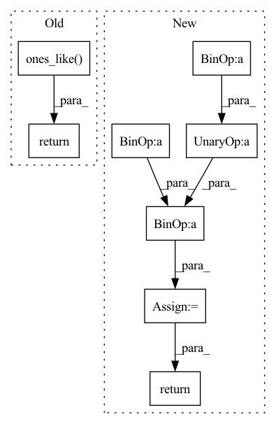

Pattern ID :1132
Before Change
).detach()
a.scatter_(dim=1, index=label.unsqueeze(1), src=src)
sigma = torch.ones_like( inp, device=inp.device, dtype=inp.dtype) * self.m
src = torch.ones_like(label.unsqueeze(1), dtype=inp.dtype, device=inp.device) - self.m
sigma.scatter_(dim=1, index=label.unsqueeze(1), src=src)
return self.loss(a * (inp - sigma) * self.gamma, label)
if __name__ == "__main__":After Change
ap = torch.clamp_min(- sp.detach() + 1 + self.m, min=0.)
an = torch.clamp_min(sn.detach() + self.m, min=0.)
sigma_p = 1 - self.m
sigma_n = self.m
logit_p = ap * (sp - sigma_p) * self.gamma
logit_n = an * (sn - sigma_n) * self.gamma
loss = torch.log(1 + torch.clamp_max(torch.exp(logit_n).sum() * torch.exp(- logit_p ).sum(), max=1e38))
z = - torch.exp(- loss) + 1
sp.backward(gradient=z * ap * torch.softmax(logit_p, dim=0))
sn.backward(gradient=z * an * torch.softmax(logit_n, dim=0))
return loss.detach()
if __name__ == "__main__":In pattern: SUPERPATTERN
Frequency: 3
Non-data size: 8
Instances Fragment ID: 4083262
Project Name: tinyzeamays/circleloss
Commit Name: 9c909ec6274b1c9c139a62f9f84ecf91c5edee35
Time: 2020-04-03
Author: 1049793129@qq.com
File Name: circle_loss.py
M Class Name: CircleLoss
N Class Name: CircleLossBackward
M Method Name: forward(3)
N Method Name: forward(3)
M Parent Class: nn.Module
N Parent Class: nn.Module
M File Name: circle_loss.py
N File Name: circle_loss.py
M Start Line: 23
M End Line: 34
N Start Line: 43
N End Line: 58
Before Change
//----------------------------------------------------------------//
giou = self.box_giou(pred_boxes[y_true[..., 4] == 1], y_true[..., :4][y_true[..., 4] == 1])
loss_loc = torch.sum((1 - giou) * box_loss_scale[y_true[..., 4] == 1])
//-----------------------------------------------------------//
// 计算置信度的loss
//-----------------------------------------------------------//
loss_conf = torch.sum(self.BCELoss(conf[y_true[..., 4] == 1], giou.detach().clamp(0))) + \
torch.sum(self.BCELoss(conf, y_true[..., 4]) * noobj_mask)
loss_cls = torch.sum(self.BCELoss(pred_cls[y_true[..., 4] == 1], self.smooth_labels(y_true[..., 5:][y_true[..., 4] == 1], self.label_smoothing, self.num_classes)))
loss = loss_loc * self.box_ratio + loss_conf * self.balance[l] * self.obj_ratio + loss_cls * self.cls_ratio
num_pos = torch.sum(y_true[..., 4])
num_pos = torch.max(num_pos, torch.ones_like( num_pos) )
return loss, num_pos
def get_near_points(self, x, y, i, j):
sub_x = x - iAfter Change
if n != 0:
print(loss_loc * self.box_ratio, loss_cls * self.cls_ratio, loss_conf * self.balance[l] * self.obj_ratio)
loss += loss_conf * self.balance[l] * self.obj_ratio
return loss
def get_near_points(self, x, y, i, j):
sub_x = x - i Fragment ID: 4083508
Project Name: bubbliiiing/yolov5-pytorch
Commit Name: 27ae9bd10c96138c60752d1da4fa965c0b7372f3
Time: 2022-01-21
Author: 47347516+bubbliiiing@users.noreply.github.com
File Name: nets/yolo_training.py
M Class Name: YOLOLoss
N Class Name: YOLOLoss
M Method Name: forward(4)
N Method Name: forward(4)
M Parent Class: nn.Module
N Parent Class: nn.Module
M File Name: nets/yolo_training.py
N File Name: nets/yolo_training.py
M Start Line: 156
M End Line: 200
N Start Line: 159
N End Line: 201
Before Change
).detach()
a.scatter_(dim=1, index=label.unsqueeze(1), src=src)
sigma = torch.ones_like( inp, device=inp.device, dtype=inp.dtype) * self.m
src = torch.ones_like(label.unsqueeze(1), dtype=inp.dtype, device=inp.device) - self.m
sigma.scatter_(dim=1, index=label.unsqueeze(1), src=src)
return self.loss(a * (inp - sigma) * self.gamma, label)
def convert_label_to_similarity(normed_feature: Tensor, label: Tensor) -> Tuple[Tensor, Tensor]:After Change
ap = torch.clamp_min(- sp.detach() + 1 + self.m, min=0.)
an = torch.clamp_min(sn.detach() + self.m, min=0.)
delta_p = 1 - self.m
delta_n = self.m
logit_p = - ap * (sp - delta_p) * self.gamma
logit_n = an * (sn - delta_n) * self.gamma
loss = self.soft_plus(torch.logsumexp(logit_n, dim=0) + torch.logsumexp(logit_p, dim=0))
return loss
if __name__ == "__main__": Fragment ID: 4083364
Project Name: tinyzeamays/circleloss
Commit Name: 61758eefe091cf44f4de87aadd84fcb2bc377f94
Time: 2020-04-04
Author: 1049793129@qq.com
File Name: circle_loss.py
M Class Name: CircleLossLikeCE
N Class Name: CircleLoss
M Method Name: forward(3)
N Method Name: forward(3)
M Parent Class: nn.Module
N Parent Class: nn.Module
M File Name: circle_loss.py
N File Name: circle_loss.py
M Start Line: 24
M End Line: 35
N Start Line: 28
N End Line: 39